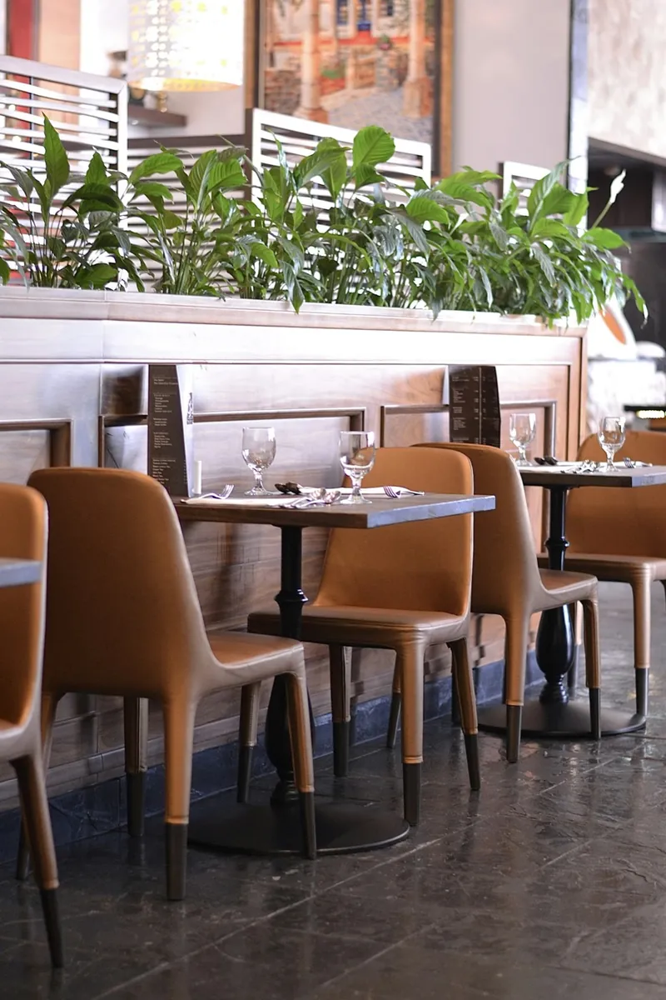
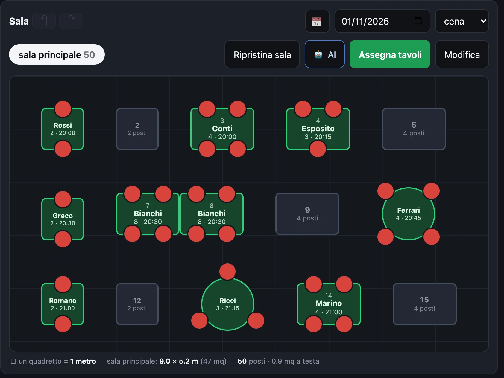
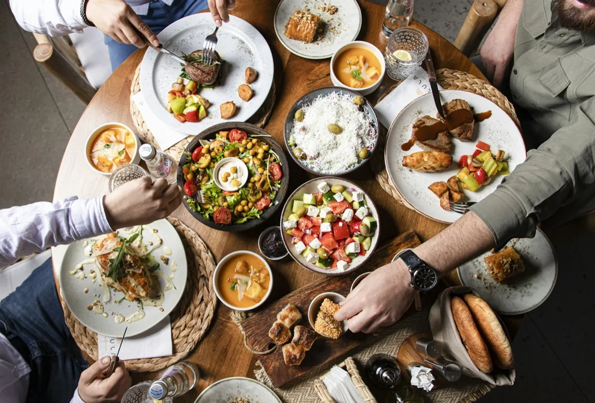
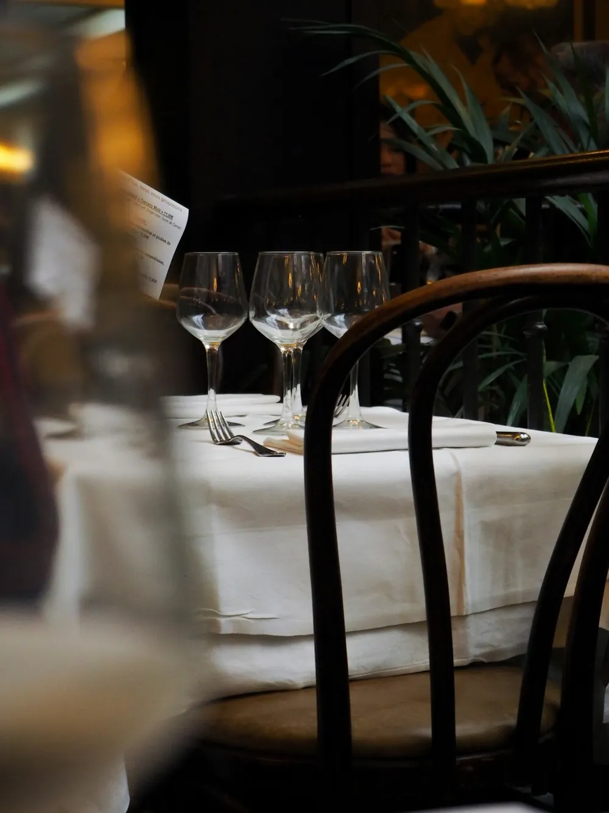

Phonetic AI
Chi ti chiama è già un tuo ospite.
Phonetic AI è il centralino con intelligenza artificiale per ristoranti. Risponde al telefono a qualsiasi ora, verifica i tavoli liberi e salva la prenotazione nel gestionale di sala: con cortesia, in italiano e nella lingua dei tuoi clienti.
- Attivo 24 ore su 24
- Tieni il tuo numero
- Parla più lingue
- ClienteBuonasera, c’è un tavolo per sei sabato alle otto e mezza?
- Phonetic AIAlle otto e mezza ho posto fuori. Se preferisce stare dentro, ho un tavolo alle nove e un quarto.
- ClienteVa bene fuori, a nome Rossi.
- Giorno
- Sabato
- Ora
- 20:30
- Nome
- Rossi
- Coperti
- 6
Tavolo esterno assegnato e prenotazione salvata
Locale e cliente inventati.
Pensato per i ristoratori
Una prenotazione naturale, cordiale e affidabile.
Affidare il telefono del ristorante a un assistente digitale è una scelta delicata. Chi chiama spesso è un cliente affezionato, che si fida della cura che metti ogni giorno nel tuo lavoro e vuole sapere che il suo tavolo è in buone mani. Per questo abbiamo progettato Phonetic AI perché ogni telefonata sia naturale, calda e precisa.
Capisce quando il cliente cambia idea («Siamo in sei… anzi, sette»), risponde alle domande sul locale e conferma il tavolo solo quando c’è davvero posto. E non è solo un centralino: il suo motore AI organizza la sala, assegna i tavoli e unisce le tavolate per accogliere più ospiti.
A te resta il lavoro che ami: far vivere ai clienti la migliore esperienza possibile.
Il problema
Il telefono squilla proprio quando hai da fare.
-
Durante il servizio
Due piatti in mano, il telefono che suona
Sei tra sala e cucina e chi vuole prenotare resta in attesa, o richiama altrove.
-

A locale chiuso
Chiamate che nessuno può prendere
C’è chi chiama dopo il servizio o nel giorno di riposo, quando al ristorante non c’è nessuno.
-
Con i turisti
Lingue diverse, prenotazioni sbagliate
Basta poco per capirsi male su giorno, ora e numero di persone.
Come funziona
Risponde, controlla i tavoli e prende la prenotazione.
«Sabato sera, siamo in sei.» Il cliente parla come parlerebbe con te. Phonetic AI raccoglie giorno, ora, nome e numero di persone. La voce con cui risponde la scegli tu.
-
Sempre disponibile
Risponde a qualsiasi ora, anche quando il locale è chiuso o durante il servizio.
-
Conferma sicura
Controlla che ci sia posto, salva la prenotazione e solo allora dà conferma al cliente.
-
Alternative
Se è pieno propone un’altra ora, un altro giorno o un’altra sala. Prenota solo se il cliente accetta.
-
Modifiche e disdette
Riconosce dal numero chi ha già prenotato e può spostare o cancellare la prenotazione.
-
Informazioni sul locale
Risponde alle domande su menu, orari, chiusure e indicazioni per arrivare.
-
Richiamate
Se un cliente chiede di parlare con te, ti lascia un promemoria per richiamarlo.
Allergie e allergeni. Queste domande passano sempre a te, così puoi rispondere di persona.
Prova la demoGestionale di sala
La tua sala, tavolo per tavolo.
Dal telefono o dal computer apri la piantina del tuo locale, con sale interne ed esterne, tavoli, porte e finestre. Le prenotazioni arrivano già organizzate.

- TavoliA ogni prenotazione assegna automaticamente un tavolo.
- TavolateQuando serve, unisce i tavoli e aggiunge le prolunghe.
- PassaggiLascia spazio per le sedie e per passare. Tiene separati i tavoli che gli indichi.
- GruppiSe una tavolata non basta, divide il gruppo su tavolate vicine, nella stessa sala.
- Doppi turniComunica entro che ora va liberato il tavolo e prenota se il cliente è d’accordo.
- ControlliPrima di salvare verifica le prenotazioni già confermate: ogni tavolo va a una sola compagnia per volta.
- Interventi a manoAggiungi le tue prenotazioni e chi arriva senza aver chiamato, blocca i tavoli col lucchetto, annulla o ripristina ogni modifica.
- Menu e orariLi inserisci una volta sola: Phonetic AI li usa quando risponde al telefono.
Multilingue
Anche chi è in vacanza prenota nella sua lingua.
Se un cliente chiama in tedesco, Phonetic AI risponde in tedesco e prende la prenotazione. Tu la ritrovi nell’elenco di sempre, insieme alle altre. In città d’arte, al mare o in montagna, chi è di passaggio può chiamare come farebbe a casa.

- ITBuonasera
- ENGood evening
- DEGuten Abend
- FRBonsoir
- ESBuenas noches
- NLGoedenavond
Demo
Provalo adesso, come farebbe un tuo cliente.
Chiama il numero della demo e simula una prenotazione: chiedi un tavolo, cambia idea, fai una domanda sul locale.

Attivazione
Tre passaggi. E tieni il tuo numero.
I clienti continuano a chiamare il numero che hanno già salvato.
-
Prepariamo la piantina
Inseriamo noi sale, tavoli, orari e menu del tuo locale. Apri il gestionale dal telefono o dal computer, direttamente nel browser.
-
Attivi la deviazione
Dal telefono del ristorante imposti la deviazione delle chiamate verso Phonetic AI.
-
Decidi tu quando usarlo
Con la deviazione attiva risponde Phonetic AI. Quando vuoi rispondere tu, la disattivi.
E se sbaglia?
Puoi aprire le prenotazioni, controllarle e correggerle a mano. Prima di confermare un tavolo, Phonetic AI verifica che ci sia posto e salva la prenotazione.
E se un cliente vuole parlare con me?
Phonetic AI ti lascia un promemoria con la richiesta, così sai chi richiamare.
Devo essere pratico di computer?
No. La piantina la prepariamo noi. A te basta aprire il gestionale per vedere la sala e le prenotazioni, anche dal telefono.
Devo cambiare numero?
No, tieni il tuo numero. Quando vuoi far rispondere Phonetic AI attivi la deviazione, e la togli quando vuoi.
Come risponde alle domande sulle allergie?
Le domande su allergie e allergeni passano a te, così puoi rispondere di persona.
Posso continuare a prendere prenotazioni io?
Sì. Le inserisci nello stesso elenco di quelle prese da Phonetic AI. Puoi segnare anche chi arriva senza prenotazione.
Prende anche ordini da asporto?
No, si occupa delle prenotazioni dei tavoli per pranzo e cena.
E se non c’è posto all’ora richiesta?
Propone un altro orario, un altro giorno o un’altra sala. Prenota solo se al cliente va bene.
Posso usarlo con i doppi turni?
Sì. Dice al cliente entro che ora deve lasciare il tavolo e prende la prenotazione se il cliente accetta.
Il cliente può spostare o cancellare una prenotazione?
Sì. Quando richiama, Phonetic AI lo riconosce dal numero e può modificare o cancellare la prenotazione.
Quanto costa?
Ci racconti com’è il tuo locale e ti prepariamo una proposta su misura.
Inizia ora
Vuoi Phonetic AI nel tuo ristorante?
Parliamo del tuo locale e di come prendi oggi le prenotazioni. Ti prepariamo una proposta su misura.